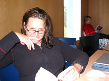
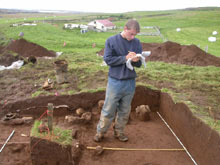

Future Research & Questions to Explore
The different specialists on our team will explore among other subjects the development of roads and paths, the importance of the ships' landing at Leiruvogur, the changes overtime in subsistence strategies, developments in building techniques, and the usage of smaller activity areas, such as the sel, or summer dairy stations.
Crucial questions will be the production of iron in the early period, and finding the locations of burials, and early farm sites.
In some instances our task is to find the remains of turf buildings, roads, burials, agricultural enclosures, and port facilities before they are destroyed by modern construction or lost to human memory.
Concerning local memory, the Mosfell Archaeological Project has worked together with people in the valley, to make an oral history video, preserving the memories of the area's oldest inhabitants.
The Mosfell Archaeological Project is planning a new phase or survey and targeted excavation in the Leirvogur bay area in collaboration with the Centre for Baltic and Scandinavian Archaeology (ZBSA) to search for the archaeological remains of the Viking Age and medieval port, which we believe served the Mosfell Valley and surrounding region and served as a foundation for the wealth of the Mosfell chieftains.
We are currently continuing surface and sub-surface surveys at the farms throughout the Mosfell Valley with a focus on identifying the medieval foundations of the farmsteads and dating their establishment. With this work we anticipate increasing our resolution on the initial settlement of the valley and the earliest regional settlement pattern.

Kaethin Prozer with Patricia Lambert in the background.
Davide Zori drawing an excavation plan at Hrísbrú.